Die Küste im September
52 der 55 Arten und Funde kannst du im September erwarten, 16 davon besonders häufig.
- Nordsee Zugvögel rasten zu Hunderttausenden im Wattenmeer, ein Höhepunkt des Vogeljahres.
- Ostsee Feuerquallen treiben jetzt auch an der Ostsee.
- Nord- und Ostsee Die letzten Seeschwalben ziehen nach Westafrika.
- Nord- und Ostsee Die ersten Herbststürme spülen Muscheln und Tang an.
Jetzt besonders gut zu sehen
-
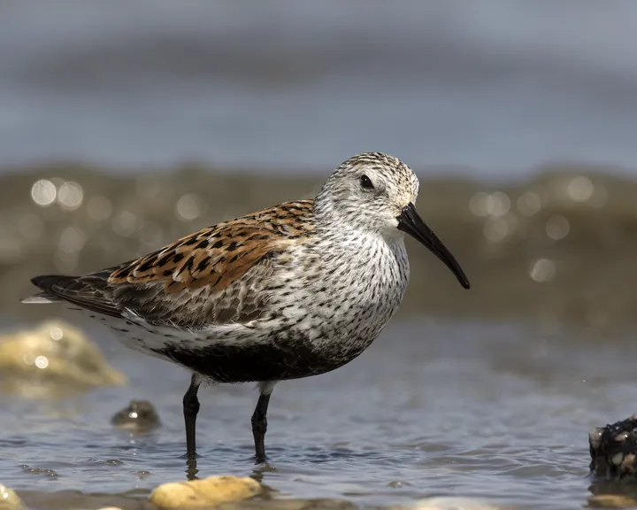
Foto: Charles Homler (Focus On Wildlife), CC BY-SA 4.0NordseeOstseeAlpenstrandläufer
SeevögelDer häufigste Watvogel im Wattenmeer, mit leicht gebogenem Schnabel. Im Sommer trägt er einen schwarzen Bauchfleck.
-
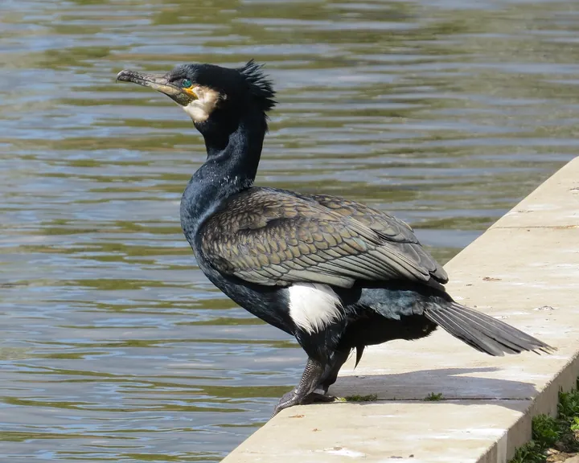
Foto: MPF, CC BY-SA 4.0NordseeOstseeKormoran
SeevögelGroßer, dunkler Wasservogel, der oft mit ausgebreiteten Flügeln auf Buhnen und Pfählen sitzt.
-
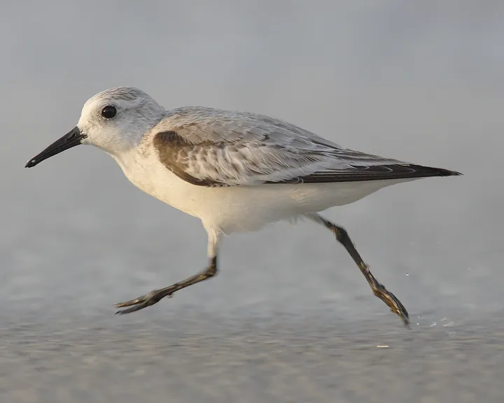
Foto: Mdf, CC BY-SA 3.0NordseeOstseeSanderling
SeevögelKleiner, heller Strandläufer, der wie ein Uhrwerk vor den auslaufenden Wellen hin und her rennt.
-
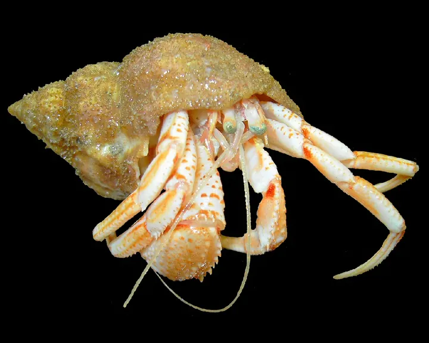
Foto: Hans Hillewaert, CC BY-SA 4.0NordseeEinsiedlerkrebs
Krebse & WürmerKrebs mit weichem Hinterleib, der in einem leeren Schneckenhaus wohnt und es mit sich herumträgt.
-
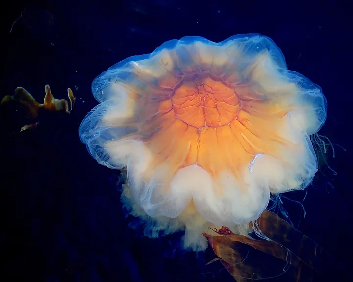
Foto: Arnstein Rønning, CC BY 3.0NordseeOstseeFeuerqualle
QuallenGroße, gelbrote Qualle mit einem dichten Vorhang aus langen, feinen Tentakeln. Auch Gelbe Haarqualle genannt.
-
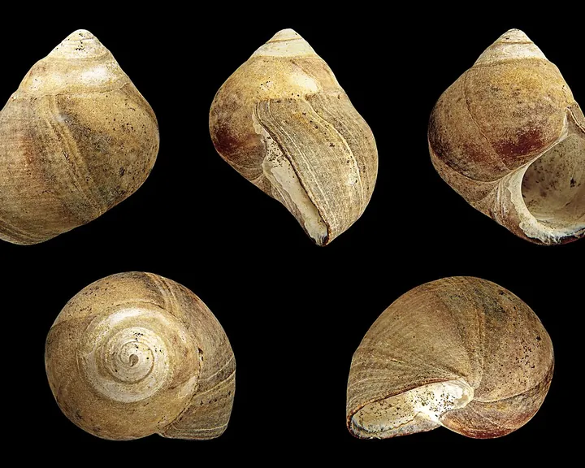
Foto: H. Zell, CC BY-SA 3.0NordseeOstseeGemeine Strandschnecke
SchneckenKleine, kegelförmige Schnecke mit dunkler, fein gestreifter Schale.
-
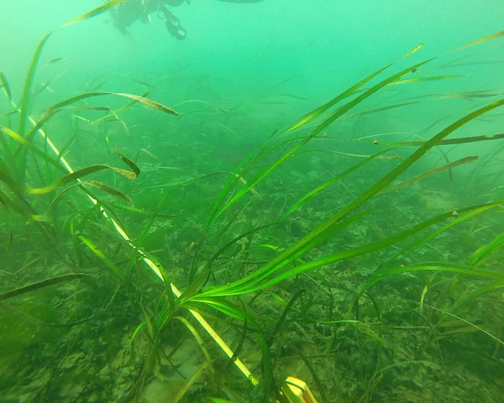
Foto: Evie Fachon, CC BY 4.0NordseeOstseeGewöhnliches Seegras
Tang & SeegrasGrasähnliche Meerespflanze mit langen, schmalen Blättern, die im Flachwasser Wiesen bildet.
-
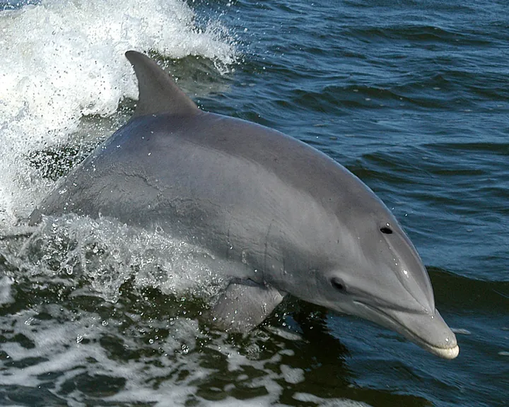
Foto: NASA, gemeinfreiNordseeOstseeGroßer Tümmler
Wale & DelfineDer bekannte „Flipper“-Delfin: grau und kräftig, mit kurzer, deutlich abgesetzter Schnauze.
-
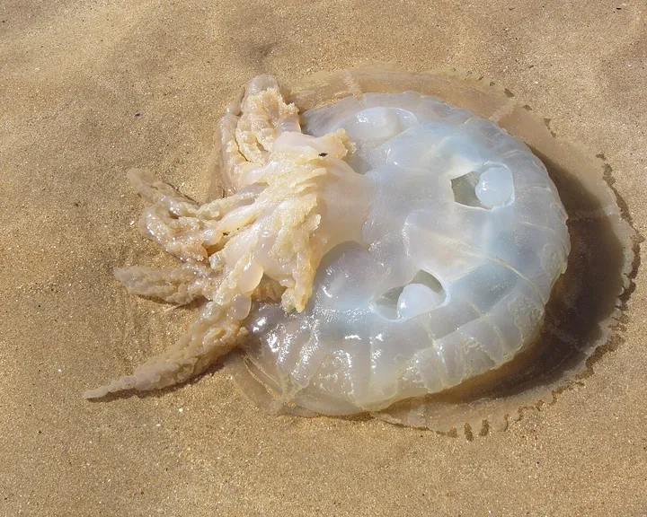
Foto: Strobilomyces, CC BY-SA 3.0NordseeLungenqualle
QuallenSehr große, feste Qualle mit bläulichem Rand und dicken, krausen Mundarmen statt Tentakeln.
-
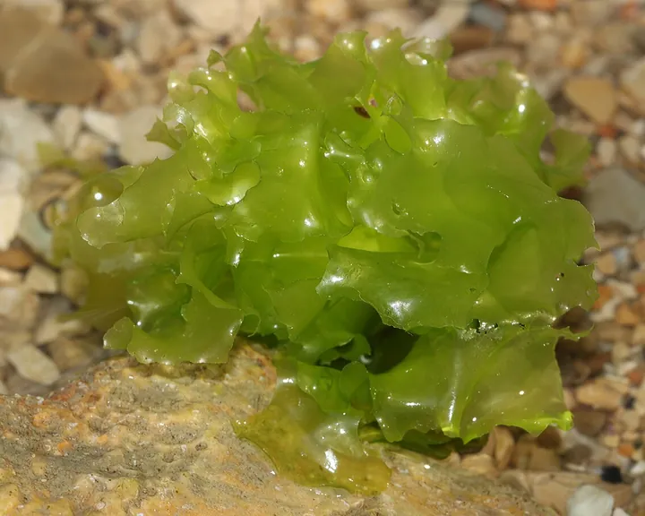
Foto: Holger Krisp, CC BY 3.0 NordseeOstsee -
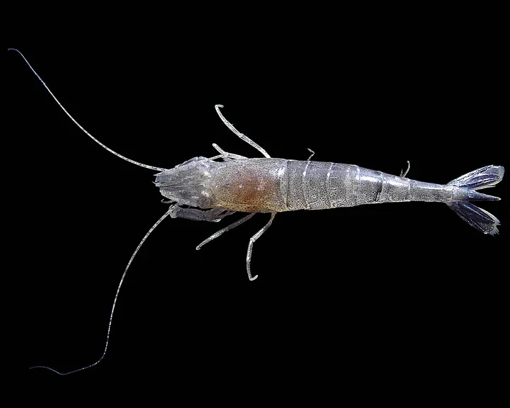
Foto: Hans Hillewaert, CC BY-SA 4.0NordseeOstseeNordseegarnele
Krebse & WürmerKleine, sandfarbene Garnele, die sich blitzschnell im Sand eingräbt. Auf dem Teller heißt sie Krabbe.
-
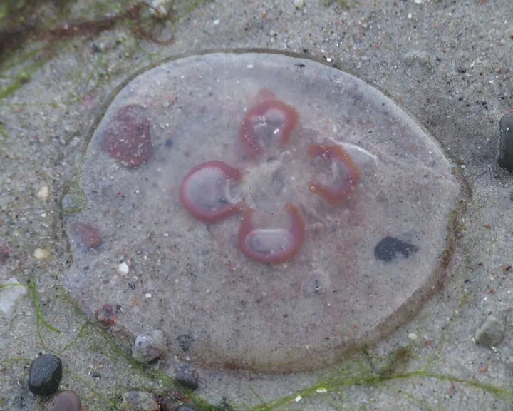
Foto: Joymaster, GemeinfreiNordseeOstseeOhrenqualle
QuallenDurchsichtige, flache Qualle mit vier ringförmigen Organen in der Mitte, die wie Ohren aussehen.
-
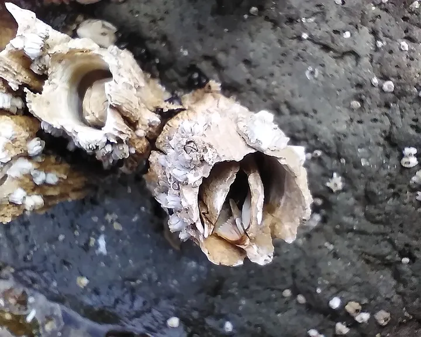
Foto: Bobjgalindo, CC BY-SA 4.0NordseeOstseeSeepocke
Krebse & WürmerKleiner weißer Kegel aus Kalkplatten auf Steinen und Muscheln. Darin wohnt ein Krebs, der auf dem Kopf steht.
-
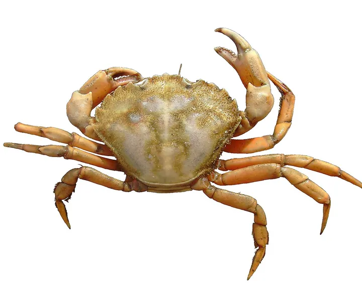
Foto: Lycaon, CC BY-SA 3.0NordseeOstseeStrandkrabbe
Krebse & WürmerHäufigste Krabbe an unseren Küsten, grünlich bis braun, mit fünf Zacken an jeder Panzerseite.
-
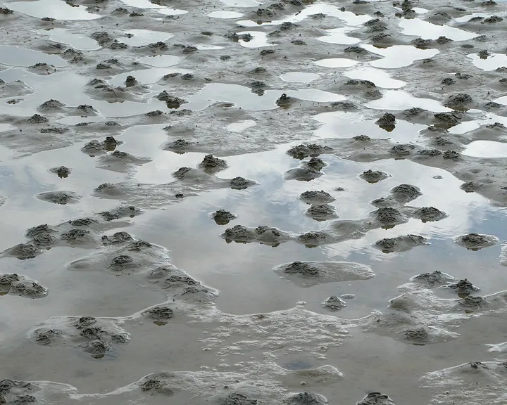
Foto: W.carter, GemeinfreiNordseeOstseeWattwurm
Krebse & WürmerGroßer Wurm, der in einer U-förmigen Röhre im Watt lebt. Bekannt sind seine geringelten Sandhaufen.
-
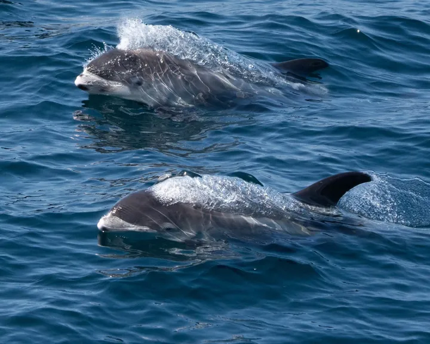
Foto: Charlotte Kirchner, CC BY 4.0NordseeWeißschnauzendelfin
Wale & DelfineKräftiger Delfin mit kurzer, heller Schnauze und großen weißen und grauen Flecken an den Flanken.
Außerdem zu finden
-
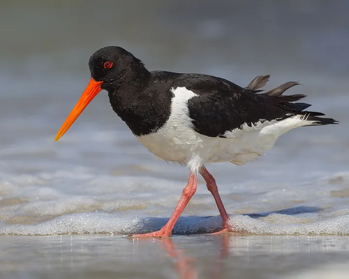
Foto: Andreas Trepte, CC BY-SA 2.5NordseeOstseeAusternfischer
SeevögelSchwarz-weißer Watvogel mit leuchtend orangerotem Schnabel und lautem, schrillem Ruf.
-
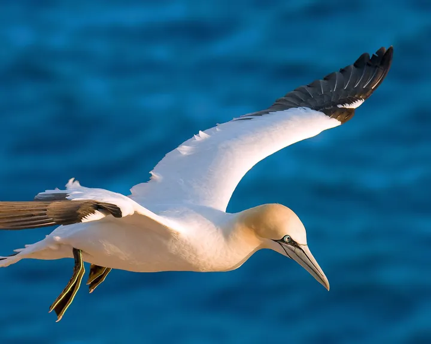
Foto: Andreas Trepte, CC BY-SA 2.5NordseeBasstölpel
SeevögelGroßer weißer Seevogel mit schwarzen Flügelspitzen und gelblichem Kopf, der sich wie ein Pfeil ins Meer stürzt.
-
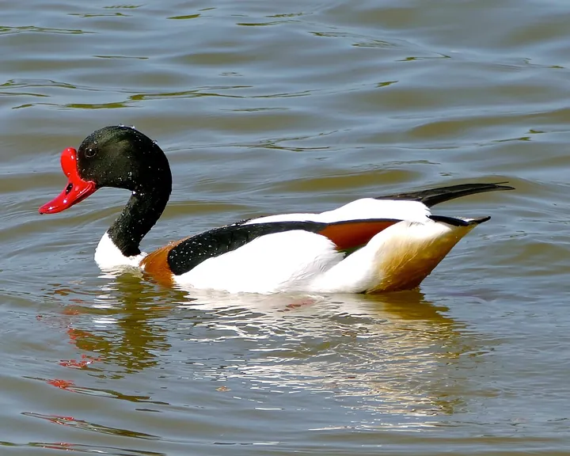
Foto: Bernard Dupont, CC BY-SA 2.0NordseeOstseeBrandgans
SeevögelBunte Halbgans: weiß mit rostbraunem Brustband, dunkelgrünem Kopf und leuchtend rotem Schnabel.
-
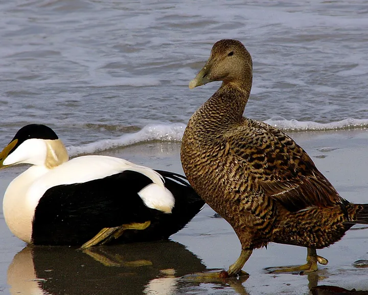
Foto: Andreas Trepte, CC BY-SA 2.5NordseeOstseeEiderente
SeevögelGroße, schwere Meeresente. Das Männchen ist schwarz-weiß mit grünem Nacken, das Weibchen braun gebändert.
-
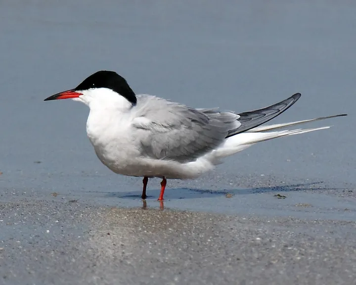
Foto: Andreas Trepte, CC BY-SA 2.5NordseeOstseeFlussseeschwalbe
SeevögelSchlanker, weißer Seevogel mit schwarzer Kappe, rotem Schnabel und tief gegabeltem Schwanz.
-
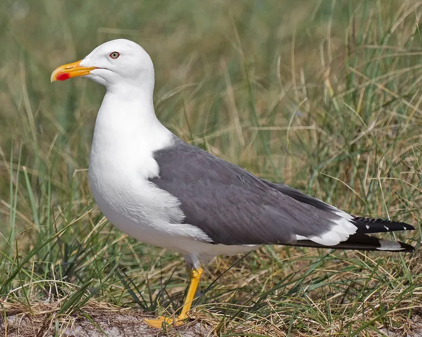
Foto: Andreas Trepte, CC BY-SA 2.5NordseeOstseeHeringsmöwe
SeevögelSo groß wie die Silbermöwe, aber mit schiefergrauem Rücken und leuchtend gelben Beinen.
-
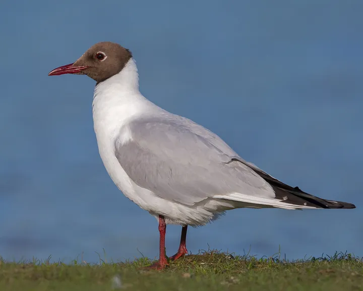
Foto: Andreas Trepte, CC BY-SA 2.5NordseeOstseeLachmöwe
SeevögelKleine, wendige Möwe mit dunkelrotem Schnabel. Im Sommer trägt sie eine schokoladenbraune Kappe.
-
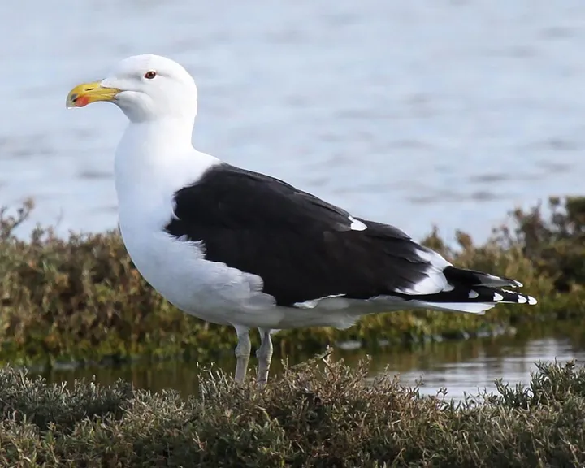
Foto: Jean-Pierre Bazard, CC BY-SA 3.0 NordseeOstsee -
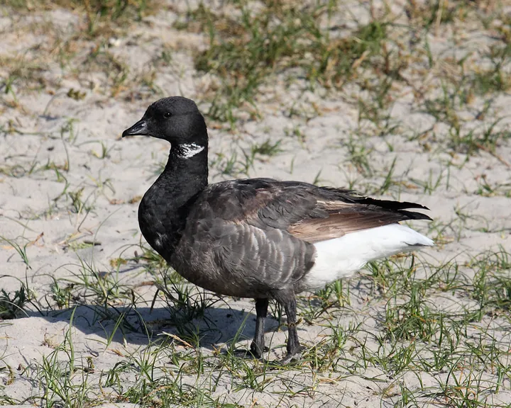
Foto: Andreas Trepte, CC BY-SA 2.5NordseeOstseeRingelgans
SeevögelKleine, dunkle Meeresgans mit schwarzem Kopf und Hals und einem schmalen weißen Halsring.
-
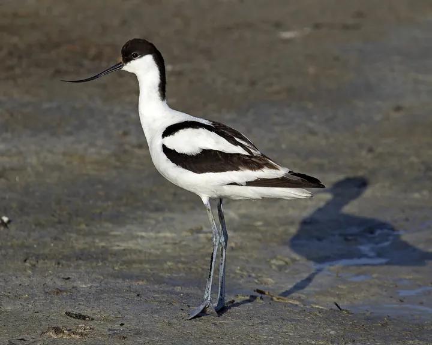
Foto: Andreas Trepte, CC BY-SA 2.5 NordseeOstsee -
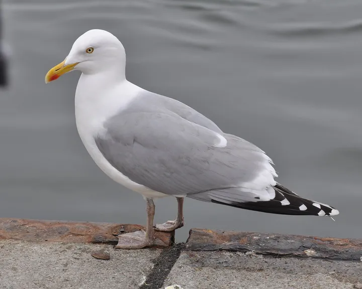
Foto: Aiwok, CC BY-SA 3.0NordseeOstseeSilbermöwe
SeevögelDie typische große Möwe an Nord- und Ostsee: hellgrauer Rücken und gelber Schnabel mit rotem Fleck.
-
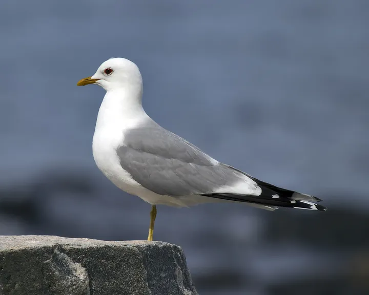
Foto: Andreas Trepte, CC BY-SA 2.5NordseeOstseeSturmmöwe
SeevögelMittelgroße Möwe mit freundlichem Gesicht: dünner, grüngelber Schnabel ohne roten Fleck und dunkles Auge.
-
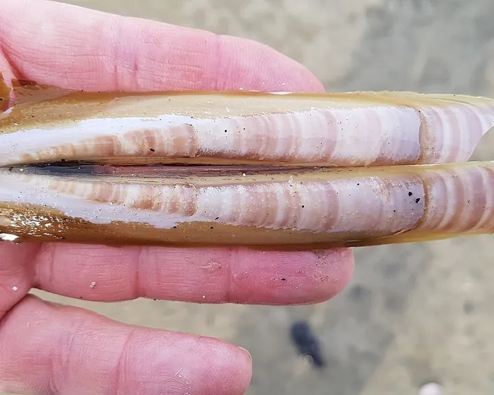
Foto: Jakob Tougaard, CC BY 4.0NordseeAmerikanische Schwertmuschel
MuschelnLange, schmale Muschel, die aussieht wie ein altes Rasiermesser.
-
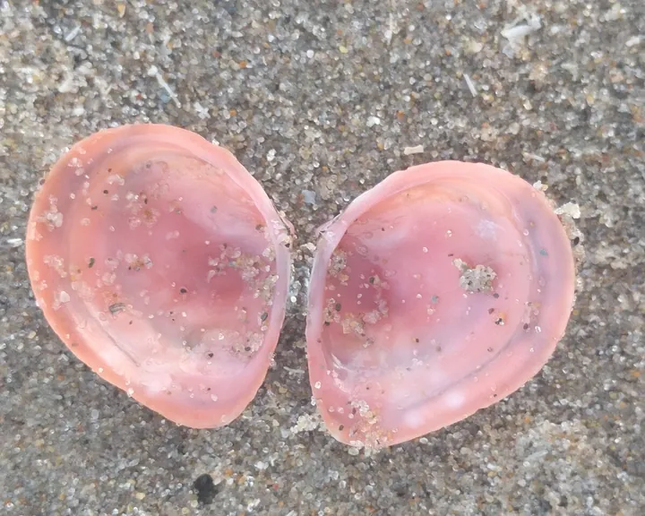
Foto: Michel Langeveld, CC BY-SA 4.0 NordseeOstsee -
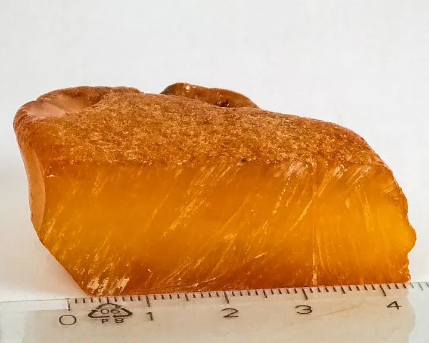
Foto: W.carter, CC BY-SA 4.0NordseeOstseeBernstein
StrandfundeGoldgelbes bis braunes, sehr leichtes Harz aus Wäldern, die vor rund 40 Millionen Jahren wuchsen.
-
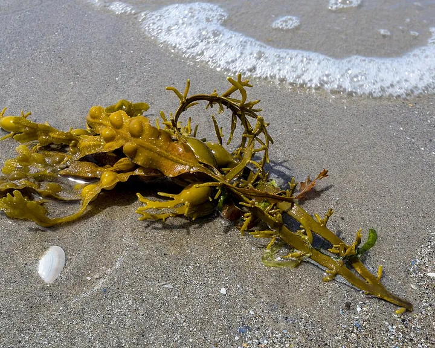
Foto: JackyM59, CC BY-SA 4.0 NordseeOstsee -
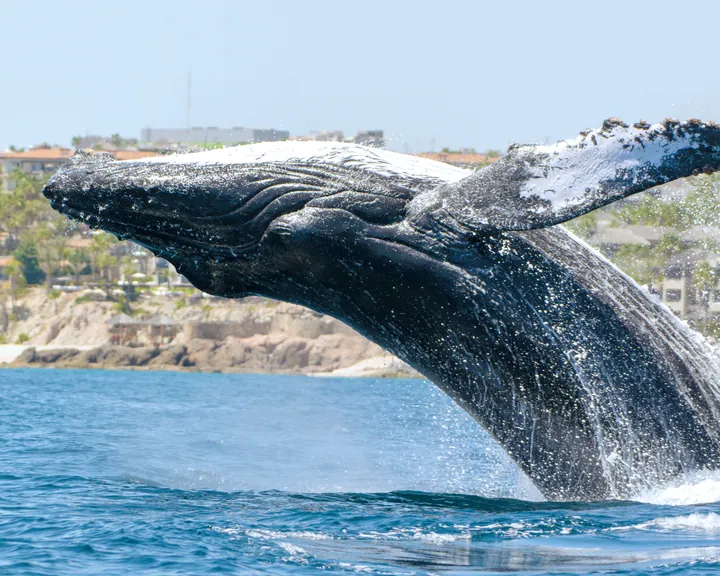
Foto: Juan Cruzado Cortés, CC BY 4.0NordseeOstseeBuckelwal
Wale & DelfineGroßer Bartenwal mit sehr langen, weißen Brustflossen, der beim Abtauchen oft die Schwanzflosse zeigt.
-
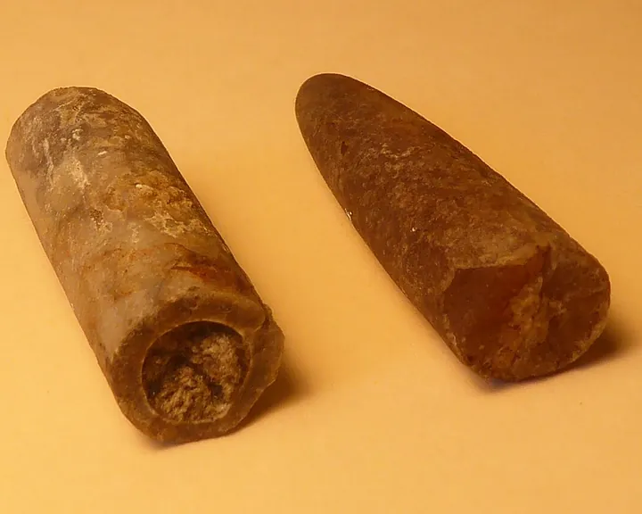
Foto: Rhetos, CC0NordseeOstseeDonnerkeil (Belemnit)
StrandfundeSpitze, patronenförmige Versteinerung aus der Urzeit, der Rest eines ausgestorbenen Tintenfischs.
-
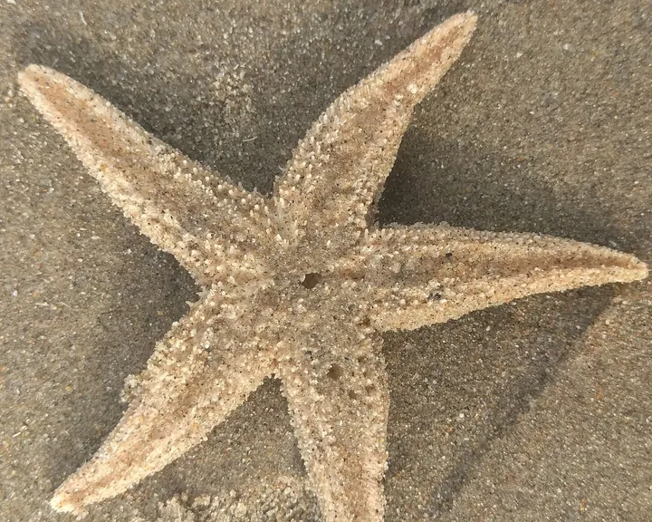
Foto: Michel Langeveld, CC BY-SA 4.0NordseeOstseeGemeiner Seestern
Seesterne & SeeigelOrange bis rotbrauner Seestern mit fünf Armen und vielen kleinen Füßchen auf der Unterseite.
-
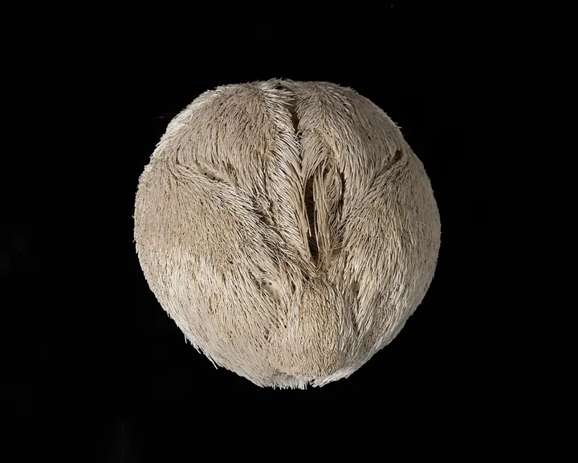
Foto: Auckland Museum, CC BY 4.0NordseeHerzigel
Seesterne & SeeigelSeeigel mit herzförmigem, sehr dünnem Gehäuse. Am Strand findest du meist nur die weiße Schale ohne Stacheln.
-
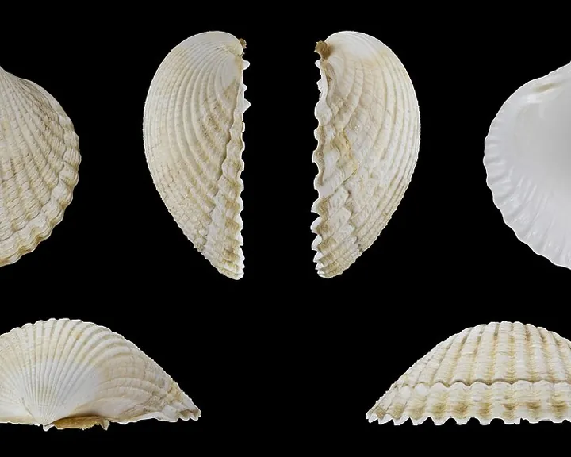
Foto: H. Zell, CC BY-SA 3.0NordseeOstseeHerzmuschel
MuschelnRundliche, gerippte Muschel. Zwei Hälften zusammen sehen von der Seite aus wie ein Herz.
-
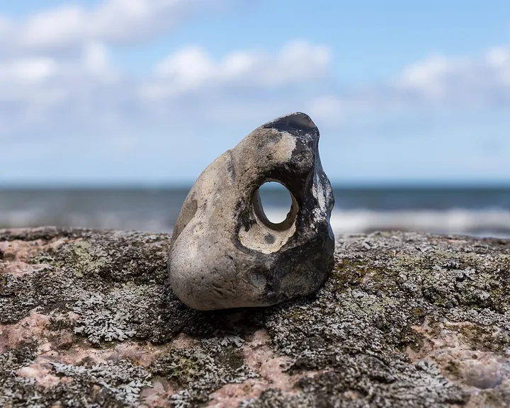
Foto: Ansgar Koreng, CC BY-SA 3.0 deNordseeOstseeHühnergott
StrandfundeEin Feuerstein mit einem natürlichen Loch. Er gilt an der Küste als Glücksbringer.
-
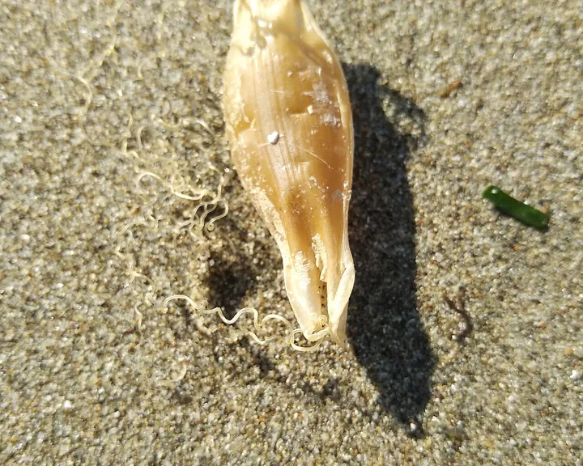
Foto: maribang, CC BY 4.0NordseeKatzenhai-Ei
StrandfundeGelbbraune, durchscheinende Eikapsel mit langen, gekringelten Ranken an den Ecken. Die Eihülle des Kleingefleckten Katzenhais.
-
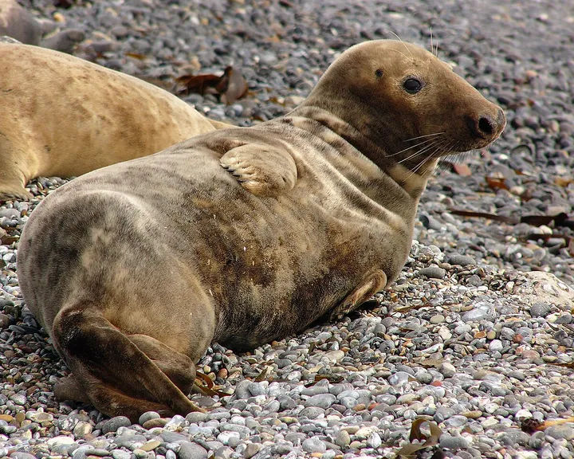
Foto: Andreas Trepte, CC BY-SA 2.5NordseeOstseeKegelrobbe
RobbenGrößtes Raubtier Deutschlands, mit langer, gerader Schnauze und weißen Jungen im Winter.
-
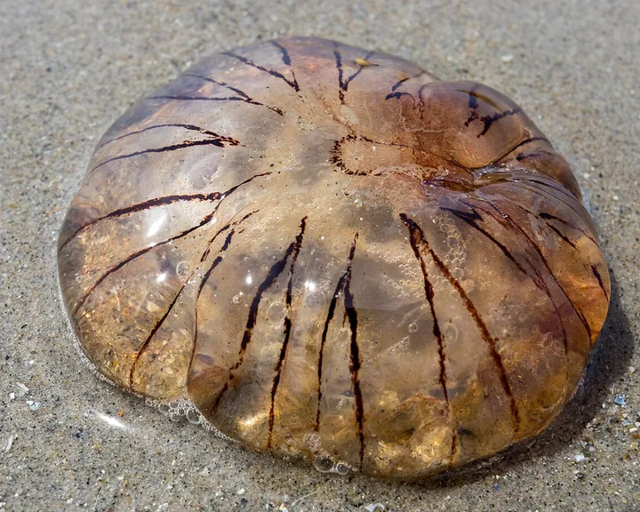
Foto: JackyM59, CC BY-SA 4.0NordseeKompassqualle
QuallenQualle mit braunen, V-förmigen Streifen auf dem Schirm, die wie eine Kompassrose aussehen.
-
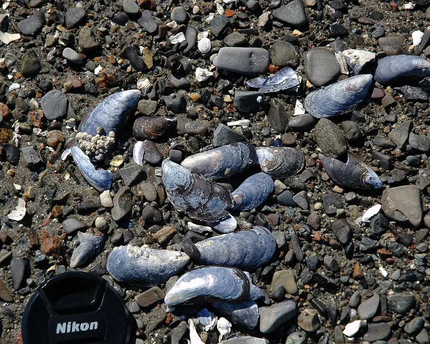
Foto: James St. John, CC BY 2.0NordseeOstseeMiesmuschel
MuschelnLängliche, blauschwarze Muschel, die in dichten Bänken an Steinen, Buhnen und im Watt sitzt.
-
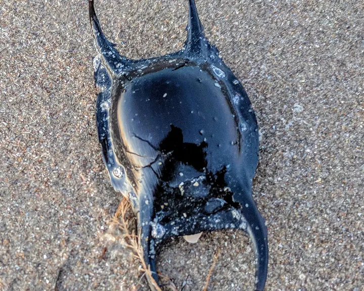
Foto: Jbee flower, CC BY-SA 4.0NordseeNixentäschchen (Rochen-Ei)
StrandfundeSchwarze, rechteckige Eikapsel mit vier Hörnchen. Darin ist ein junger Rochen herangewachsen.
-
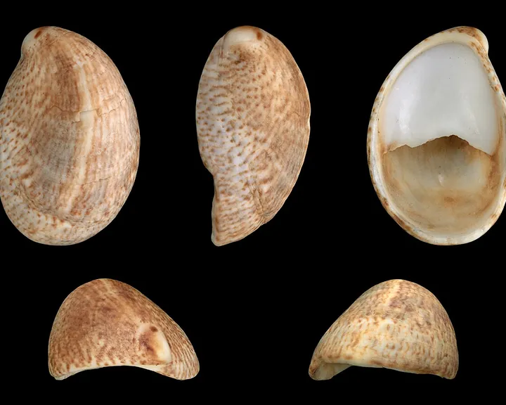
Foto: H. Zell, CC BY-SA 3.0NordseePantoffelschnecke
SchneckenFlache Schnecke, die innen ein kleines Querbrett hat und dadurch aussieht wie ein Pantoffel.
-
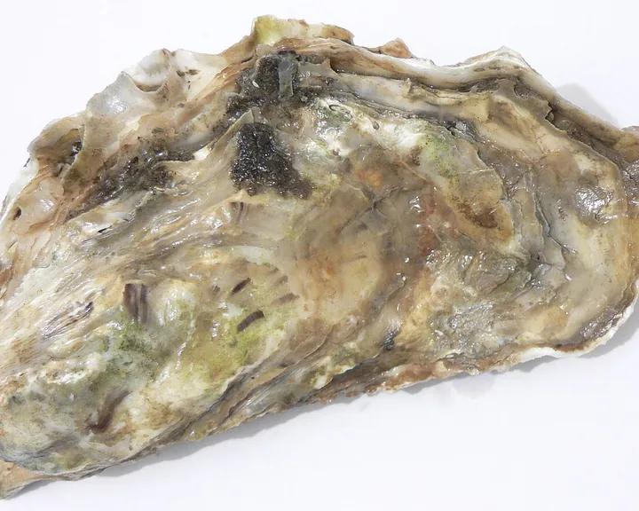
Foto: David Monniaux, CC BY-SA 3.0NordseePazifische Auster
MuschelnGroße, unregelmäßig geformte Muschel mit blättrig-schuppiger, grauer Schale.
-
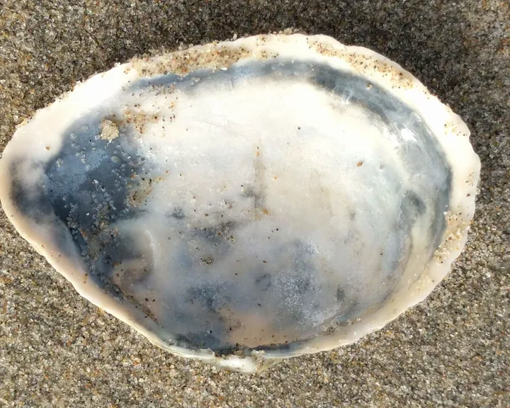
Foto: Michel Langeveld, CC BY-SA 4.0NordseeOstseeSandklaffmuschel
MuschelnGroße, ovale, kreideweiße Muschel, deren Hälften hinten nicht ganz schließen.
-
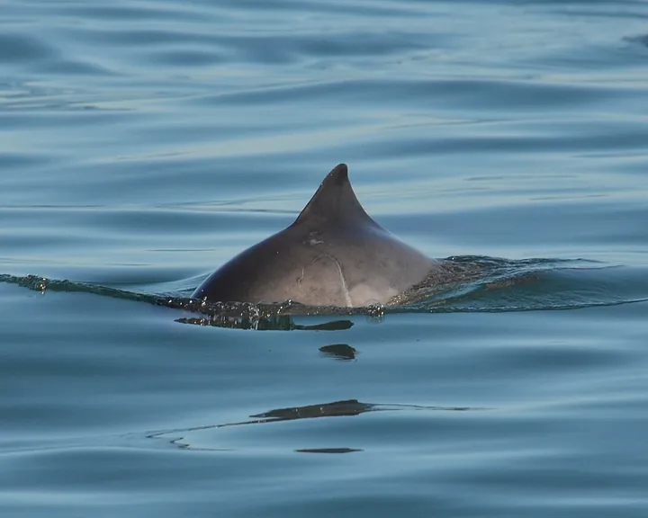
Foto: Ben Phalan, CC BY 4.0NordseeOstseeSchweinswal
Wale & DelfineDer einzige heimische Wal. Klein, scheu und mit dreieckiger Rückenflosse.
-
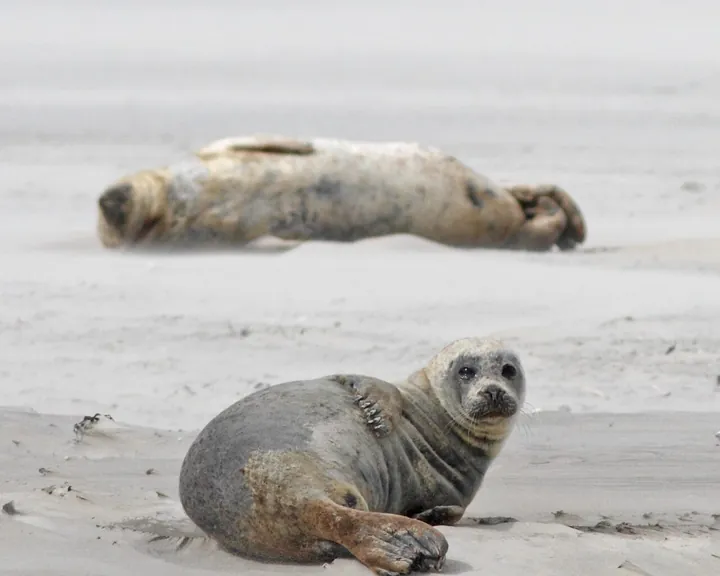
Foto: Bouke ten Cate, CC BY 4.0NordseeOstseeSeehund
RobbenHäufigste Robbe an der Nordsee mit rundem Kopf, kurzer Schnauze und großen dunklen Augen.
-
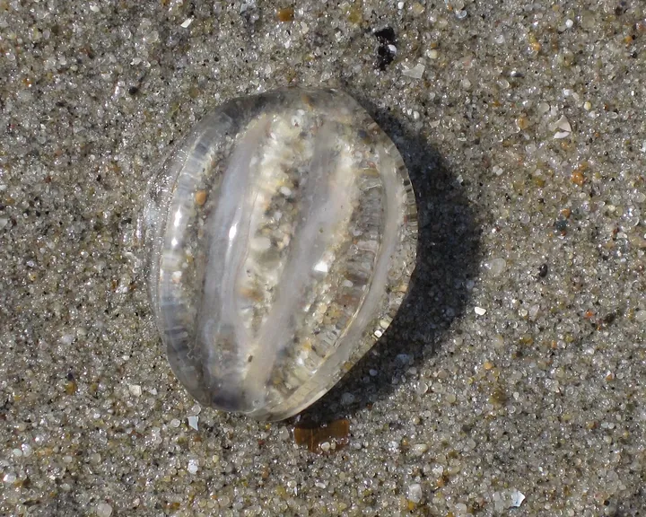
Foto: Bj.schoenmakers, CC0NordseeOstseeSeestachelbeere
QuallenKleine, glasklare Kugel mit acht Rippen. Eine Rippenqualle, keine echte Qualle, und sie brennt nicht.
-
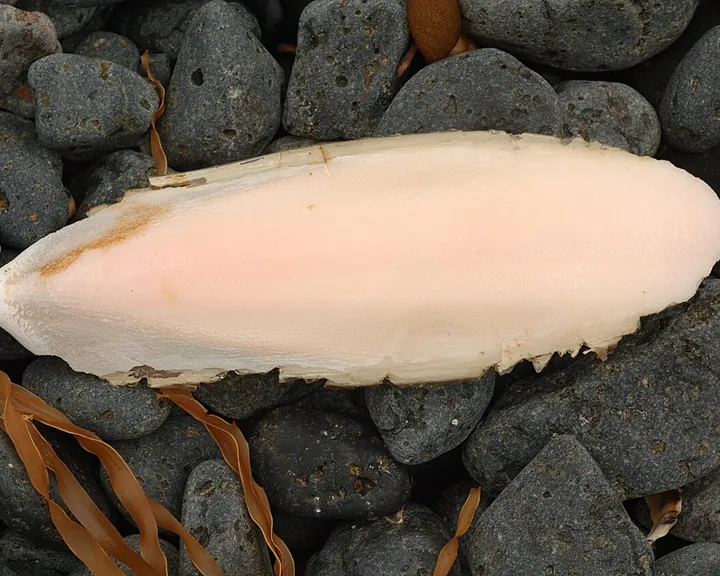
Foto: Gary Houston, CC0NordseeSepiaschale
StrandfundeWeiße, ovale und sehr leichte Platte. Es ist die innere Schale eines Tintenfischs, des Gemeinen Tintenfischs.
- Foto: Michel Langeveld, CC BY-SA 4.0 Nordsee
Wellhornschnecke
SchneckenGroße Meeresschnecke mit welligen Rippen. Ihre Laichballen sehen aus wie ein gelber Schaumstoffklumpen.
- Foto: NOAA National Marine Sanctuaries, gemeinfrei Nordsee
Zwergwal
Wale & DelfineDer kleinste Bartenwal der Nordsee: schlank, mit spitzem Kopf und einem weißen Band auf den Brustflossen.
Jetzt kaum zu finden
Passend zum September
Alle Empfehlungen ansehen-
Becherlupe
Auswahl bei Amazon
Krabbe, Garnele oder Seestachelbeere kurz in Meerwasser setzen und von allen Seiten vergrößert anschauen. Danach zurück ins Wasser.
Bei Amazon ansehen Becherlupe (Werbelink, öffnet in neuem Fenster) - Beispielfoto · Foto: Huangdan2060, CC BY 3.0
Kescher mit Teleskopstiel
Auswahl bei Amazon
Für Garnelen und kleine Krebse im Priel. Ein feines Netz schont die Tiere.
Bei Amazon ansehen Kescher mit Teleskopstiel (Werbelink, öffnet in neuem Fenster) - Beispielfoto · Foto: Mattes, CC BY 2.0 de
Wattschuhe
Auswahl bei Amazon
Schützen im Watt vor scharfen Austern, Seepocken und Muschelschalen und sitzen auch im Schlick fest am Fuß.
Bei Amazon ansehen Wattschuhe (Werbelink, öffnet in neuem Fenster) - Beispielfoto · Foto: Camper2, CC BY-SA 4.0
Strandmuschel mit UV-Schutz
Auswahl bei Amazon
Schützt an windigen Tagen vor Sonne und Sand. Achte auf einfachen Aufbau und ein kleines Packmaß.
Bei Amazon ansehen Strandmuschel mit UV-Schutz (Werbelink, öffnet in neuem Fenster)
Werbelink: Wenn du über diesen Link etwas kaufst, erhält der Meereskompass eine kleine Provision von Amazon. Für dich ändert sich am Preis nichts. Als Amazon-Partner verdiene ich an qualifizierten Verkäufen.